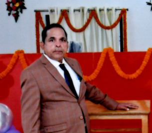
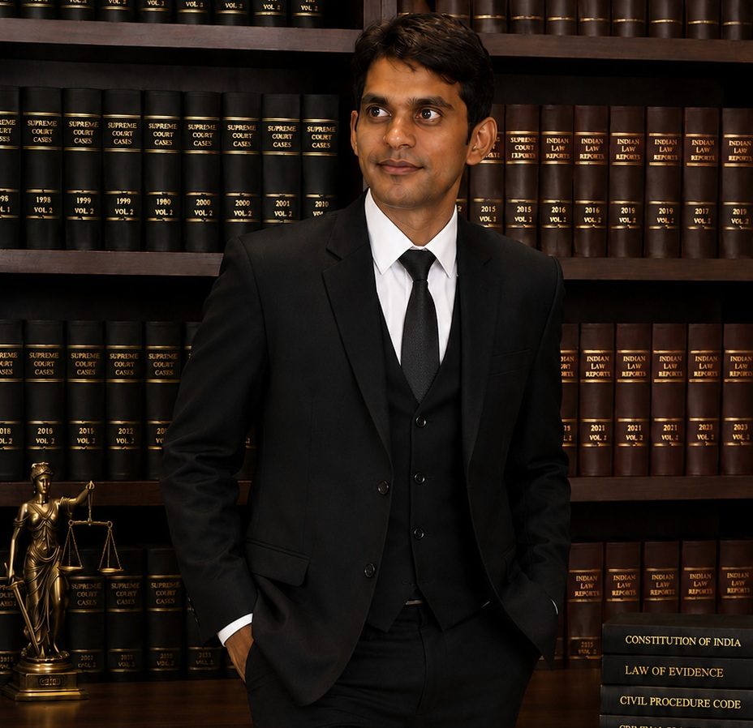
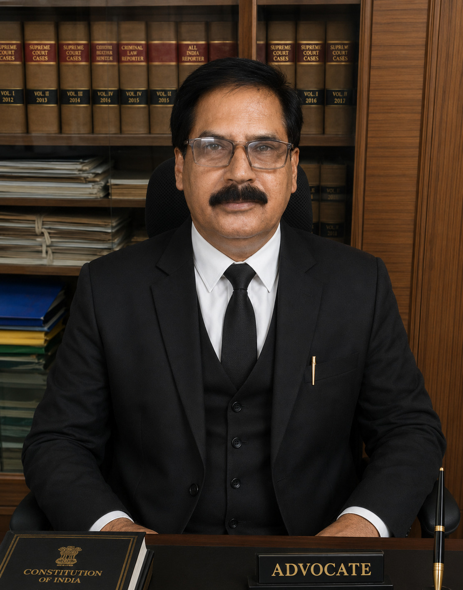
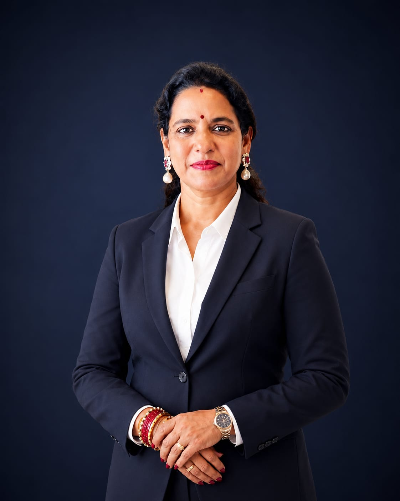

A respected advocate and land rights activist dedicated to justice and public service.
PeopleJuris is the contemporary identity of a legal institution whose roots run deep, tracing back to 1995 when it was founded in Bissamcuttack as People's Law Home by Advocate Chandra Mouli Patnaik — a respected advocate and land activist whose career was devoted to justice, accessibility, and service to the community.
For over four decades, People's Law Home has been dedicated to providing quality legal assistance to the people of Rayagada and neighboring districts. Guided by a strong commitment to social justice, the chamber has consistently worked towards the welfare of marginalized communities, ensuring that legal support reaches those who need it most.
Through his dedication, integrity, and unwavering pursuit of justice, Mr. Chandra Mouli Patnaik established a legacy that continues to inspire the firm today.
Carrying forward this legacy, Mr. Swadhin Patnaik, son of Mr. Chandra Mouli Patnaik, has joined the profession with a modern and dynamic approach to legal practice. An MBA, LL.B. graduate with extensive experience across diverse professional portfolios, he is an Advocate enrolled with the Bar Council of Odisha.
His expertise spans corporate advisory, consumer protection matters, compliance, and business-related legal issues, enabling the firm to serve both individual and corporate clients effectively.
To be a trusted legal partner for individuals, businesses, and institutions by combining traditional values of justice with progressive legal expertise, ensuring that quality legal services remain accessible to all.
To deliver accessible, ethical, and effective legal solutions while upholding the rule of law, protecting individual rights, and contributing to the social and economic development of the communities we serve.
Advocate Mr. Chandra Mouli Patnaik established People's Law Home in Bissam Cuttack with a vision of making justice accessible to everyone.
For over three decades, the chamber has provided trusted legal assistance to people across Rayagada and neighboring districts of Odisha and Andhra Pradesh.
Under the leadership of Advocate Swadhin Patnaik, the firm continues its legacy while embracing modern legal practice and corporate advisory services.

MBA, LL.B.
Managing Partner
Corporate Advisory, Consumer Protection,
Compliance and Business Law.

Advocate | MA, LLM
Civil Litigation, NI Act matters, recovery proceedings.

BA,LL.B.
Advisor
Professional Legal Guidance • Trusted Since 1995
📍 Office Address
PEOPLEJURIS LLP Laxmi Nilayam, OLD SBI Lane,
Near Dukum Road Square,
Bissam Cuttack,
Rayagada, Odisha - 765019
☎ Phone
+91 8763830030
✉ Email
info@peoplejuris.com
🕒 Office Hours
Monday - Saturday
9:00 AM - 7:00 PM